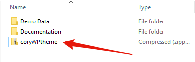

This document covers the installation, set up, and use of this theme, and provides answers and solutions to common problems. We encourage you to first read this document thoroughly if you are experiencing any difficulties before contacting our support team.
Uploading Through WordPress
To upload through your Dashboard, select “Appearance” and then “Themes”. Next, select the “Install Themes” tab at the top of the page and then select the “Upload” link, right above the search field. Choose your file and select “Install Now”. Once the theme is fully uploaded and installed, click “Activate” to activate the WordPress theme.
The theme files will be stored on your server in the wp-content/themes location.
When uploading your theme with the installer, please ensure you are uploading the theme .zip file, not the entire package you downloaded. In this case, you will be uploading coryWPtheme.zip.
FTP Upload
To manually upload your new WordPress theme, login with your credentials to your website and locate the wp-content folder in your WordPress install files. Upload the un-zipped Cory WordPress Theme folder into the: wp-content/themes folder.
Once uploaded, activate the theme by heading to the “Themes” menu in the WordPress Dashboard. Locate the Cory WordPress Theme theme and hit “Activate”.
Looking for a good, free FTP solution - why not try FileZilla or CyberDuck
Installing Theme Plugins
Once the theme is installed, you will see a notice detailing a number of plugins which should be installed. Installing of these items is very simple - just click "Begin Installing Plugins" and on the following screen you can have the theme install and activate all the plugins for you.
Once done you will see a notice informing you the operation is complete.
Importing the Demo Data
Once the plugins have been installed and activated, you are now ready to import the demo data. We use the One Click Demo Data plugin to make the process very easy for you. To begin, head to "Appearance" and then "Import Demo Data" and you will be taken to the import screen. From there hit "Begin Importing Demo Data" and the theme will grab the demo content and set it up for you.
To access the theme options, you may select the Customize button in the admin bar dropdown or select "Customize" from the Dashboard menu. Note that you must be logged in as a site administrator in order to access the controls.
Theme Options
1 - Update Settings
Using your Envato username and API details, you can enable automatic updated for your theme (giving you a simple single-click method for updating your theme, similar to a theme hosted on the wordpress.org repository. For details on setting this up, please see the video guide below.
2 - Site Identity
Here you can specify a site title, tagline and favicon (the small icon shown in your browser window) and more crucially, your own custom logo.
Setting up your own logo is very simple - just use the uploader provided and you can either choose an image from your media library, or upload something fresh, its up to you.
3 - Colours
These options give you a range of colour pickers which allow you to tweak the themes colour scheme to suit your tastes. Any changes you make here will be seen live so you can see exactly what each option does as your changing them.
4 - Background Image
Want to use your own image instead of a solid colour? No problem - simply use this option to upload your own image.
5 - Menus & Widgets
Here you can setup and edit your navigation and widgets, however, given the cramped nature of the WP Customizer, we recommend using WP's dedicated page found under the "Appearance" area in your Dashboard, which not olny gives you much more room to work with, but also a simpler interface - but this is of course totally up to you and your preference.
6 - Additional CSS
For those of you our there who want to apply your own custom bespoke styling, our themes provide you with a custom CSS area where you can quickly and easily apply your own custom CSS.
If your looking to make larger changes, or add a LOT of custom code, we highly recommend using a child theme - see below for details on getting this setup
7 - Portfolio Settings
Here you can control the archive layout for your portfolio items by choosing from one of our awesome layouts.
Creating menus within WordPress is very simple, and WP gives you a couple of methods to do this. We suggest using the dedicated menu page found under Appearance > Menus, however you are also free to use the menu management system found within the theme customizer/options page (Appearance > Customize)
Creating Menus
Once you’re viewing the Menus, the process of creating a menu is quite easy - essentially you create your menu item from the columns on the left (this can be a link to a post, page or other form of content) or even a custom link using the "Custom Link" menu item, you can see both in the image below. Once you have created your perfect menu, be sure to assign it to the Standard Navigation area and hit save to see it in action.
Creating Dropdown Menus
An important aspect to note when using our theme is the process of creating dropdowns/sub menus is the top level item (the menu item in the main menu area you click/hover to activate the sub-menu) needs to be a "Custom Link" menu item with a URL of just # - this allows the dropdown to work fully on both desktops and mobiles where 'hovering' is not available.
Cory comes with two widgetized areas, the blog sidebar (shown to the side of the main post content within single posts) and the footer, which allows a number of columns of custom widget content for whatever you wish.
There are a couple of ways you can get started with widgets within WP, we recommomend the dedicated admin page found under Appearance > Widgets in your WP dashboard however you can also add/edit widgets to the available widgetized areas via Appearance > Customize however this can be a little cramped with your working with many widgets at once.
Adding Widgets
When you arrive at the Widget admin page, you will be presented with an array of widgets on the left and the widgetized areas on the right, to add a widget to one of the sidebars, simply drag your desired widget over to the sidebar of your choice on the right and your all set. From there simply edit the widget as you wish (depending on the widget your using of course) and your done.
The theme uses the popular WordPress page building tool, Elementor, to allow you to quickly and easily create stunning pages. We provide some example in our pre-built demo data for you to get started with and study, but creating your own from scratch is a breeze too.
Before getting started, for the best experience with Elementor and Cory, head to Elementor > Settings in your WordPress Dashboard and disable Elementor's colours and fonts by checking the boxes provided.
To begin, create a fresh page under Pages > Add New in your WordPress Dashboard. From there, simply hit the large "Edit with Elementor" button to beging working with the plugin.
Building is very simple with Elementor, for a guide on how it works check out the Video Tutorial below. For more on how to use the plugin be sure to check out the Elementor Documention also.
To begin creating your portfolio projects, head to Portfolio > Add New in your WordPress Dashboard.
Creating a project is very similar to a regular WordPress post, in essense you have the regular content area (where you could write a description of your work/your process etc), and gallery area where you can upload the images of your awesome project, and a featured image area (the featured image, much like a regular WP post, used to represent your portfolio item within Portfolio feeds and archive pages/searches etc. We will now detail each area.
Featured Content Images
This is where you will add your images to the projects by clicking the "Add or Upload Files" button - from there you can either upload fresh images or pick some awesome shots from your exisiting media library. To rearrange the photos, simply drag them into the order you want! Dont for get to update your project once done though.
Featured Image
Upload a featured image - any size will work though we recommend 700 x 420px. The images will be automatically applied throughout all the neccessary templates and loops so be sure to pick the best shot to reprasent your work.
Contact Form 7 is our recommended form plugin for WordPress. It is a simple but powerful form creator for WordPress. Here we will show you how to use Contact Form 7 to create and edit a basic form.
After Contact Form 7 is installed, you’ll find a new menu item in your WordPress admin area called Contact, here is where your forms and created and edited. From the Contact main screen, you will see your first contact form, its usually a default form called 'Contact Form 1' OR if you have imported the demo data for our theme you may see a few forms that we have made specially for you.
When creating and editing forms CF7 uses simple shortcodes (in WordPress these shortcodes are words surrounded by square brackets like “[” and “]”) - these shortcodes are generated via the 'Generate Tag' area (marked in red) and then placed in the form builder area (marked in blue) - you can also add your own HTML to the form for extra control.
Im seeing a 'stylesheet missing' error when trying to upload the theme
This means your uploading the wrong zip package. When downloading your theme you have the option to download the full package, or the installable theme itself.
We suggest to download the whole package, then unzip this to locate your theme.zip file (theme name will change based on your purchased theme.

Im setting a max_upload_size error when trying to upload the theme
Some hosting, especially budget shared hosting, may impose file restrictions for uploads to your WP site. In some cases, installing this plugin and work very well https://wordpress.org/plugins/increase-upload-max-filesize/ however if it fails to work then you will need to contact your hosts to they can make the necessary changes from there end as this is something we cannot help with from a theme point of view.We suggest
Where is my Visual Composer/Revolution license?
Premium plugins such as Revolution Slider and Visual Composer may request a purchase code during use. This code is used to provide direct updates and support from the plugins creator and as such is not required or supplied for use with our themes. Our frameworks have been carefully create to ensure your running the latest compatible version at all times, so you have no need to worry. Please note that we manually update our bundled plugins after thorough testing as some plugin updates have bugs that we are unhappy to ship to our customers, you will receive updates when we are happy with the plugin. If you truly require auto-updates from these plugins you’ll need to purchase a personal license, please note this is the same for each theme on themeforest that bundles plugins.
Im getting a 404 error when viewing my portfolio/team etc
WordPress is a rock solid platform in most cases, but sometimes, when working with a new theme for instance, it needs a little nudge to update all of its core settings etc. If your seeing a 404 error or such when trying to view your projects (or team members, clients etc - depending on your theme)
To do this, simply head to Settings > Permalinks and select 'postname' from the options listed - even if this option is already selected, hit save anyway (this is the nudge we mentioned earlier) - Once done, you should be able to view all your content with no issues.
Should any issues remain, this indicates an issue with your server (the theme has no control of this) so you will need to contact your hosts for further support.
My site is slow to load, why?
As you saw when viewing the demos of our themes, our themes are capable of being blisteringly fast, however you may ocationally notice your site is not loading as fast as you hoped – here you can find some tips for ensuring your new site loads as quickly as possible http://www.tommusrhodus.com/speeding-up-wordpress/
I want to translate the theme into my language/change some wording - what do I do?
Like most WP themes, our theme is translatable via the provide PO file - you can read more about this process here http://www.tommusrhodus.com/wp-basics-translating-your-wordpress-theme/ as well as check out this handy video guide for this task.